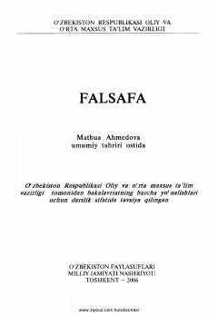

FOliy o'quv yurtlari talabalari uchun mo'ljallangan falsafa fani bo'yicha fundamental darslik.
Ushbu darslik bakalavriat yo'nalishlari uchun mo'ljallangan bo'lib, falsafa fanining asoslari, tarixi, Sharq va G'arb falsafasi, shuningdek, zamonaviy falsafiy oqimlarni o'z ichiga oladi. Kitobda ontologiya, gnoseologiya, ijtimoiy falsafa va O'zbekistonning mustaqillik davridagi taraqqiyotining falsafiy masalalari keng yoritilgan.